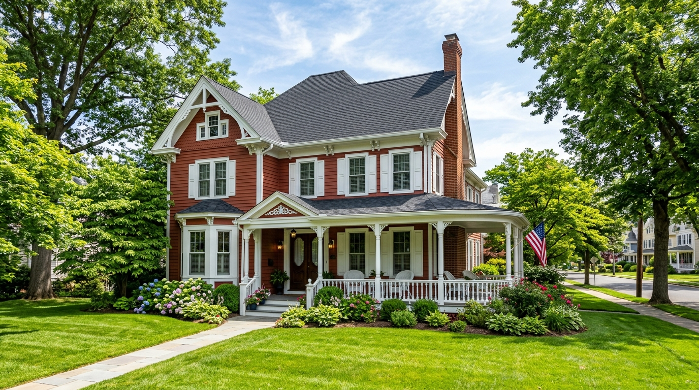
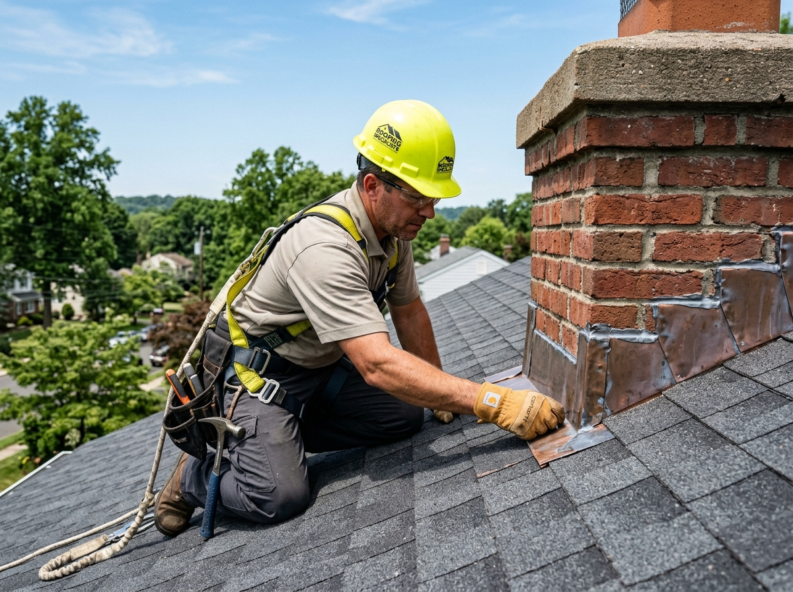

Precision Roof Repair
Fast, permanent repairs for wind-damaged shingles, valley leaks, rusted valley channels, and deteriorated vent collars across Somerville.
Explore Roof RepairBridgewater Roofer provides master architectural shingle replacements, historic Victorian flashing restoration, emergency leak tarping, and commercial flat roofing across Somerville and Somerset County.

Whether dealing with storm wind lift, aged chimney flashing on high gables, or planning an architectural shingle replacement, our local crews provide prompt diagnostics.

As the Somerset County seat, Somerville boasts a rich blend of historic Victorian architecture, bustling commercial properties along Main Street, and established post-war residential neighborhoods near Peters Brook. These diverse building styles demand specialized roofing knowledge—from steep Victorian gables and historic brick chimneys to commercial low-slope membranes.
Properties throughout Somerville encounter intense Central New Jersey weather: winter freeze-thaw cycles that push ice dams under eave lines, high summer humidity that fuels algae growth, and severe coastal windstorms that test shingle adhesion. Bridgewater Roofer installs robust roofing systems engineered to withstand these localized environmental stresses.
From precision emergency leak repairs to complete designer roof replacements and commercial membranes.
Fast, permanent repairs for wind-damaged shingles, valley leaks, rusted valley channels, and deteriorated vent collars across Somerville.
Explore Roof RepairFull tear-offs down to bare decking, plywood inspection, synthetic underlayments, ice barriers, and 50-year non-prorated architectural shingles.
Explore Roof ReplacementSystematic moisture diagnostics using infrared tracing to isolate hidden water paths behind vinyl siding, masonry chimneys, and attic rafters.
Explore Leak Repair24/7 priority emergency dispatch for windstorm damage, fallen branch impacts, and severe leaks across Somerville and Central Somerset County.
Emergency Roofing ServicesCustom fabrication of copper and heavy-gauge aluminum step and counter flashing for Somerville’s historic brick chimneys and dormers.
Flashing SolutionsPremium slate-look architectural shingles (GAF Camelot II, CertainTeed Grand Manor) that preserve Victorian elegance with modern durability.
Residential SystemsEnergy-star white TPO and thick EPDM rubber membranes for Main Street storefronts, professional offices, and multi-family flat roofs.
Commercial RoofingDetailed physical assessments for real estate transactions, insurance underwriting, and aging roof lifespan evaluations in Somerville.
Schedule InspectionSteep gable lines, historic masonry chimneys, and mature shade trees create distinct leak risks. Click any component below to inspect.
With Somerville’s dense canopy of mature oak and maple shade trees, wet autumn leaves naturally collect in roof valleys. Trapped wet leaves hold moisture against shingles and accelerate granule erosion, causing water backup under heavy downpours.
Extract degraded valley shingles, install high-temperature self-adhering ice-and-water barrier, and install open metal valley channels to facilitate rapid debris shedding.
From Peters Brook basin moisture to freezing nor'easters, Somerville roofs require year-round weather defense.
Spring storm systems push heavy rainfall across Somerville, exposing deteriorated flashing seams and testing gutter drainage capacity.
Summer humidity accelerates moss and algae growth on shaded north slopes, while 90°F heat waves test attic ventilation airflow.
Mature trees throughout Somerville drop heavy leaf loads that accumulate in roof valleys and trap moisture against older shingles.
Frequent temperature swings between daytime melt and sub-freezing nights cause ice dams along uninsulated Victorian eaves.
We adapt materials and installation techniques to suit every neighborhood throughout the 08876 community.
Multi-pitch steep gables, turrets, and intricate dormers requiring custom copper step flashing and designer architectural shingles.
Low-slope TPO and heavy-duty EPDM single-ply membranes designed for downtown retail shops, restaurants, and mixed-use buildings.
Established mid-century residences requiring full tear-offs, plywood redecking checks, and balanced ridge ventilation systems.
Durable, cost-effective roofing solutions with extended manufacturer warranties for rental properties and multi-family units in Somerville.
We provide honest, transparent recommendations based on shingle age, granule loss, and roof decking structural integrity.
Recommended when surrounding shingles remain pliable and water intrusion is localized.
Recommended when the shingle mat has dried out or multiple leaks threaten home interiors.
From seamless borough permitting to magnetic nail sweeps, our systematic 8-step process delivers reliable execution.
Responsive phone discussion to understand your roof concern, timeline, and property specifics.
Comprehensive roof surface evaluation, flashing check, attic decking assessment, and photos.
Transparent written proposal with exact material options, clear milestones, and competitive pricing.
Complete permit filing with Somerville Construction Department (25 West End Ave).
Heavy tarps, plywood siding protectors, and driveway boards safeguard landscaping and pavers.
Tear-off, decking re-fastening, ice & water barrier installation, and precision shingling.
Multiple magnetic sweeps across all lawns, flowerbeds, and driveways to clear every stray nail.
Final walkthrough with you, project sign-off, and delivery of registered warranty documentation.
In Somerville Borough, full roof replacements and structural decking repairs require a building permit filed with the Somerville Construction Department located at 25 West End Ave, Somerville, NJ 08876. Under New Jersey Uniform Construction Code (NJ UCC) regulations, ice barrier membranes must extend at least 24 inches past interior heated wall lines, and all installations must meet local hurricane and wind-resistance codes.
Bridgewater Roofer prepares all engineering specifications, files permit paperwork directly with Somerville municipal officials, and coordinates required inspections on your behalf to guarantee complete code compliance.
Every estimate is customized to the specific square footage, pitch, and materials of your property.
High-pitch Victorian gables require specialized safety staging, harnesses, and additional installation labor.
Older Borough properties with multiple existing shingle layers require additional disposal and labor fees to reveal bare decking.
Options ranging from standard architectural shingles to designer slate-look laminates determine overall lifespan and warranty.
Any water-damaged tongue-and-groove or plywood boards identified during tear-off must be replaced for manufacturer warranty validation.
Get a precise, itemized estimate customized for your Somerville property.
Call (908) 465-9944 for an Itemized EstimateLocal accountability, certified master craftsmen, and ironclad manufacturer warranties make us the preferred Somerset County roofer.
Based directly adjacent at 400 Commons Way in Bridgewater, our crews reach Somerville homes in minutes.
Full New Jersey Home Improvement Contractor licensing (#13VH09876500) plus comprehensive liability and workers' compensation.
Certified GAF and CertainTeed master techniques unlock complete non-prorated manufacturer warranty protection.
Extensive tarping, lawn shielding, and multiple magnetic sweeps protect your Somerville property, gardens, and pets.
Real feedback from property owners throughout Somerville and Central Somerset County.
"We have an older Victorian home on Mountain Avenue with complex valleys and a high brick chimney. Bridgewater Roofer fabricated custom step flashing and replaced our roof with gorgeous architectural shingles. No leaks and zero mess."
"Emergency leak tarping after a severe windstorm pushed tree branches into our eaves. Their team arrived within two hours, secured the opening, and came back two days later for the permanent repair. Exceptional responsiveness."
"They took care of all the permit paperwork with the Somerville Borough Construction Department on West End Ave. The roof installation was completed in one single day and passed municipal inspection without a hitch."
Based right next door in Bridgewater, we deliver rapid dispatch throughout central Somerset County.
Central headquarters and main staging yard providing rapid dispatch for residential and commercial roofing.
Bridgewater Roofing HubDirectly adjacent borough along the Raritan River featuring compact residential streets and storm repairs.
View Raritan ServicesHistoric riverfront borough requiring meticulous water-resistant underlayment and storm protection.
View Bound Brook ServicesNeighboring township south across the river basin with extensive subdivisions and high wind exposure.
View Hillsborough ServicesDirectly west along the Route 202/22 corridor with suburban colonials and commercial facilities.
View Branchburg ServicesWatchung ridge community to the northeast with steep hillside properties and specialized tree canopy protection.
View Martinsville ServicesCommon questions regarding roof replacements, leak repairs, permits, and costs in Somerville Borough.
Yes. Bridgewater Roofer provides prompt residential and commercial roof repairs throughout Somerville (ZIP 08876). We resolve active roof leaks, missing shingles, deteriorated plumbing pipe collars, chimney flashing leaks, and sudden storm damage.
Yes. The Somerville Construction Department (located at 25 West End Ave, Somerville, NJ 08876) requires a municipal building permit for full roof replacements. Bridgewater Roofer prepares all specifications, files paperwork, and coordinates the required municipal inspections on your behalf.
Absolutely. Somerville features many historic Victorian and Queen Anne properties. Our craftsmen specialize in custom copper step and counter flashing, high-pitch gables, valley intersections, and installing designer shingles that preserve authentic architectural character.
We install Class F 130-MPH wind-rated architectural shingles using enhanced 6-nail fastening patterns and Dura Grip adhesive seals, ensuring your roof withstands coastal nor'easters and severe wind gusts.
Because our dispatch center is directly adjacent in Bridgewater (400 Commons Way), our emergency crews reach Somerville properties within 60 to 90 minutes for rapid emergency tarping and temporary leak containment.
Yes. We install, repair, and maintain single-ply commercial TPO and EPDM flat roof systems for storefronts, restaurants, offices, and multi-family buildings along Main Street and throughout Somerville.
Most residential roof replacements in Somerville are completed within a single day. Larger historic homes with multi-gable configurations may take up to 2 days, including comprehensive magnetic cleanup.
We drape heavy-duty tarps and plywood shields over siding, flowerbeds, and shrubbery. We place wooden blocks under all equipment on driveways and perform multiple magnetic roller sweeps to capture every stray nail.
Professional insights on roof longevity, historic maintenance, and cost planning.
Detailed breakdown of square footage, shingle types, and labor costs for central New Jersey homes.
Read Cost GuideUnderstanding copper step flashing, steep gable drainage, and how to maintain older Borough homes.
Explore Shingle TypesEssential steps to inspect and protect your roof before and after severe seasonal storms in Somerset County.
Read Storm ChecklistFrom fast pipe boot leak repairs to full architectural replacements and Victorian flashing restoration, our local team provides honest inspections and dependable warranties.
Speak directly with our roofing specialist. No pressure, no obligations.